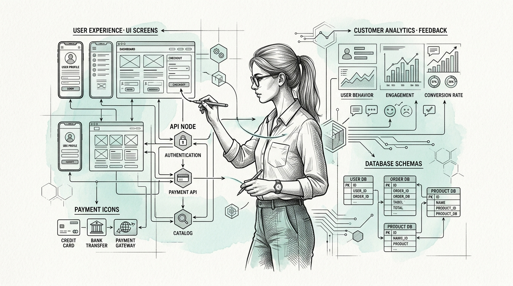
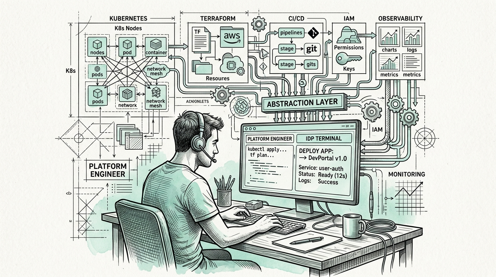
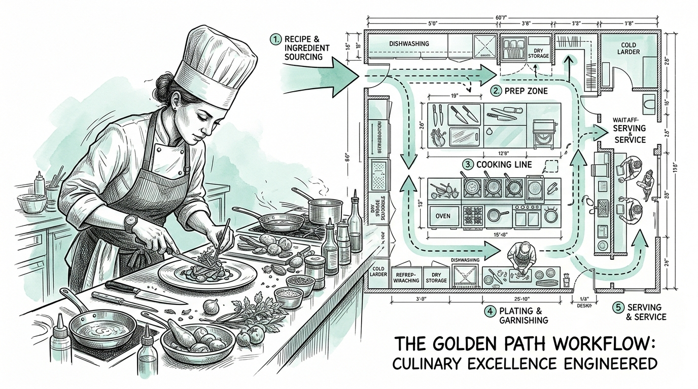
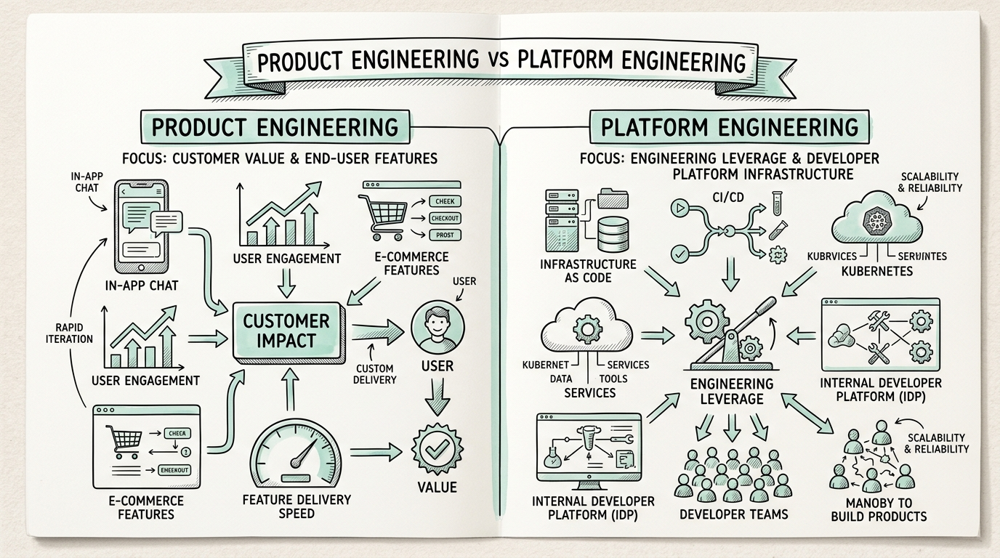
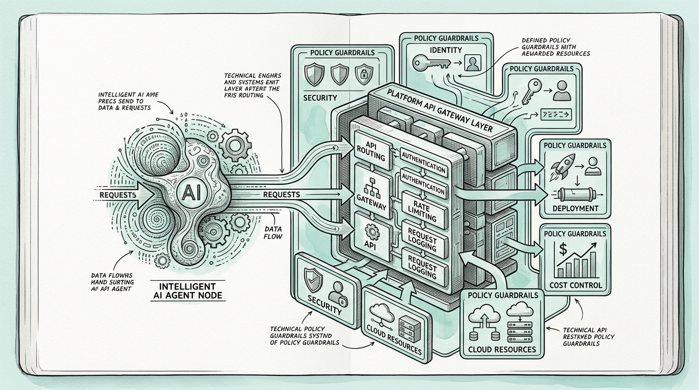
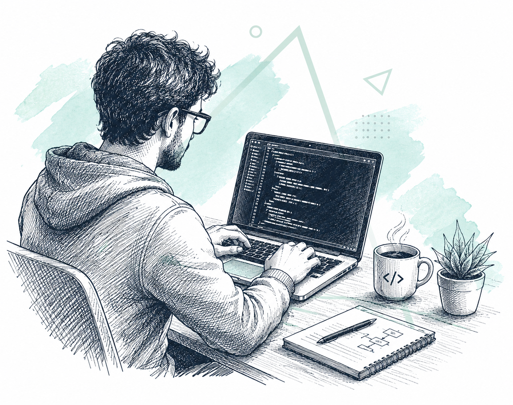

← Articles
Platform Engineer vs Product Engineer
Scene 1 of 8
Scene 01 • Introduction
Platform Engineer vs Product Engineer
Where software engineering is heading in the age of AI and platform ecosystems.
"Product Engineers build what the business sells. Platform Engineers build what engineers need to build, ship, and operate it."
- Two vital layers of the modern engineering ecosystem.
- Different optimizations: Customer value vs. Engineering leverage.
- AI Acceleration: Why platforms are becoming the safety governance layer for AI agents.

Scene 02 • Customer Focus
Product Engineering: Building for Users
Connecting human needs, business logic, UX, and software execution.
- Primary Customer: End users and business stakeholders.
- Product Thinking: Asking "Are we solving the right problem?" rather than just implementing tickets.
- Scope: UIs, APIs, Auth, Payments, DB models, Business rules, Analytics, Performance.
A technically perfect feature that nobody needs is still a failure.

Scene 03 • Engineering Leverage
Platform Engineering: System Behind the System
Engineered complexity removal from the developer experience (DevEx).
$ platform create service payments-api
✓ Repository & CI/CD Pipeline created
✓ Staging & Production Cloud environments ready
✓ Secrets, Observability & Alerts configured
- Abstracts Kubernetes, Terraform, IAM, Security, and Monitoring.
- Reduces cognitive load so teams focus on product value.

Scene 04 • Metaphor & DevEx
The Kitchen Analogy & Golden Paths
Product Engineers are the chefs; Platform Engineers build the kitchen.
"The customer cares about the food, not the oven model. But a poorly designed kitchen blocks the chef from creating great dishes."
GOLDEN PATH WORKFLOW:
Create Service → Choose Runtime → Generate Repo → Provision Infra → Configure Security → Deploy
- Golden Paths: Providing the easiest, safest, and most supported way to ship common software.

Scene 05 • Comparison
Role Comparison Matrix
Same technologies (AWS, Docker, K8s, Go, TS, Terraform)—different optimization targets.
| Area | Product Engineer | Platform Engineer |
|---|---|---|
| Customer | End users | Developers |
| Objective | Product Value | Engineering Leverage |
| CI/CD | Uses pipelines | Builds pipeline ecosystem |
| Main Concern | User Experience (UX) | Developer Experience (DevEx) |

Scene 06 • AI Integration
AI & Platform Governance
The more software AI generates, the more important the platform becomes.
AI AGENT → PLATFORM APIs:
create_service() | deploy_service() | rotate_secret() | get_metrics()
- Safe Abstractions: Exposing policy-driven, safe capabilities to AI agents instead of raw cloud credentials.
- Enforces security, budget boundaries, IAM identity, and audit logs for autonomous AI operations.

Scene 07 • Nuance Strategy
An Additional Nuance: Adoption Timing
When should you build a dedicated platform team? (Startups vs. Scaling Companies)
- Early-Stage Startups: Building a platform team too early creates overengineering. Product Engineers handle initial infrastructure.
- Scaling Companies: As the org grows across multiple teams, the lack of Platform as a Product leads to 30 teams reinventing the wheel 30 times.
Knowing the exact moment to transition between early agility and scale platform is the strategic differentiator of technical leadership.
Scene 08 • The Future
The Autonomous System
Where software engineering is heading next.
Human → AI Agent → Developer Platform → Policy → Cloud → Application → Observability → Feedback ↺
- Value Shift: Less valuable for typing raw code, more valuable for system design & product value.
- Convergence: Engineers designing platforms where humans and AI agents build, deploy, and operate software at scale.
